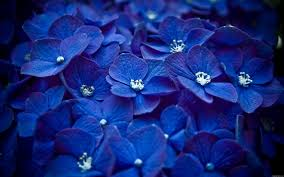

Синій
Цікаві факти про синій колір: - Вчені встановили, що синій колір є найулюбленішим у світі: його обирає 40% населення
- Синій колір сприяє активації мозку та стимулює творче мислення
- Він позитивно впливає на організм людини та її наміри. В одному з японських міст змінили жовті ліхтарі на сині, і злочинність невдовзі зменшилася на 9%
- Місто Шефшауен в Марокко найбільше приваблює туристів завдяки забарвленню будинків у синій колір.
- Синій колір сприяє зниженню частоти пульсу та дихання, нормалізує артеріальний тиск. Тому при будь-яких захворюваннях потреба у синьому кольорі зростає
- Якщо щодня дивитися на ці кольори, можна вилікувати запалення очей. Недарма небо і море синього кольору
- Синій - колір гідності, лояльності, стабільності та довіри. Тому, обираючи одяг у цих тонах, ви підкреслюєте стабільну позицію та дружелюбність